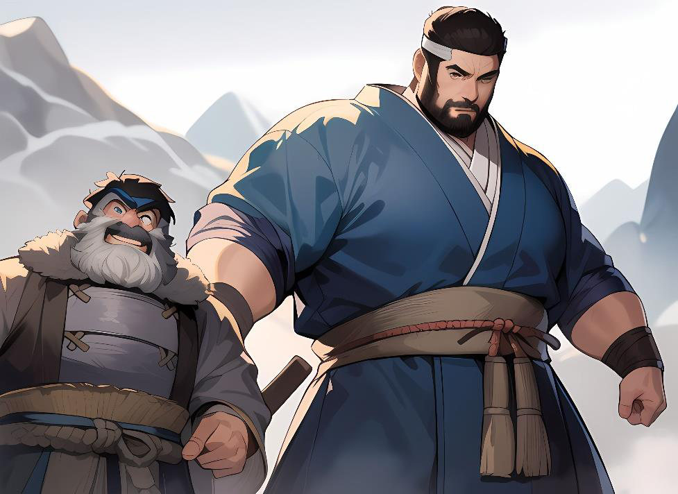

PNJ de ejemploPlantillas base y generador aleatorio
PNJs de Ejemplo
Para diseñar PNJs, es bueno partir de plantillas base y sobre ellas añadir poderes y más cosas, así nos ahorra bastante trabajo previo y podemos centrarnos en lo importante.
Senshi Ki Base 10 Ini 2 At Me 0 Da Me 1d6 At Di 0 Da Di 1d6 De Me 11 De Di 11 Ki 3 PK 15 PV 20 Abs 0 Senshi Físico Melee Base 10
Ini 0 At Me 2 Da Me 1d6+2 At Di 0 Da Di 1d6 De Me 12 De Di 11 Ki 0 PK 0 PV 30 Abs 1 Senshi Físico Distancia Base 10 Ini 3 At Me 0 Da Me 1d6 At Di 3 Da Di 2d6 De Me
10 De Di 11 Ki 0 PK 0 PV 20 Abs 0 Senshi equilibrado base 10 Ini 1 At Me 1 Da Me 1d6+1 At Di 1 Da Di 1d6+1 De Me 11 De Di 11 Ki 1 PK 5 PV 20 Abs 1 Senshi Tanque 10
Ini 0 At Me 0 Da Me 1d6 At Di 0 Da Di 1d6 De Me 12 De Di 12 Ki 0 PK 0 PV 35 Abs 3 Senshi Danzante 10 Ini 3 At Me 0 Da Me 1d6 At Di 0 Da Di 1d6 De Me
13 De Di 13 Ki 0 PK 0 PV 20 Abs 1 Senshi Ki Base 20 Ini 4 At Me 0 Da Me 1d6 At Di 0 Da Di 1d6 De Me 12 De Di 12 Ki 4 PK 20 PV 30 Abs 2
Senshi Físico Melee Base 20 Ini 0 At Me 4 Da Me 2d6+1 At Di 0 Da Di 1d6 De
Me 14 De Di 13 Ki 0 PK 0 PV 35 Abs 2 Senshi Físico Distancia Base 20 Ini 4 At Me 1 Da Me 1d6+1 At Di 4 Da Di 2d6+1 De Me 11 De Di 12 Ki 0 PK 0 PV 30 Abs 1
Senshi equilibrado base 20 Ini 2 At Me 2 Da Me 2d6 At Di 2 Da Di 2d6 De Me 12 De Di 12 Ki 1 PK 5 PV 25 Abs 1 Senshi Tanque 20
Ini 0 At Me 2 Da Me 2d6 At Di 0 Da Di 1d6 De Me 14 De Di 13 Ki 0 PK 0 PV 40 Abs 4 Senshi Danzante 20 Ini 5 At Me 1 Da Me 1d6 At Di 1 Da Di 1d6 De M e 14
De Di 14 Ki 1 PK 5 PV 30 Abs 1 Daimyo equilibrado base 30 Ini 3 At Me 3 Da Me 2d6+1 At Di 3 Da Di 2d6+1 De Me 13 De Di 13 Ki 2 PK 10 PV 30 Abs 1 Daimyo Tanque 30
Ini 1 At Me 4 Da Me 2d6+2 At Di 0 Da Di 1d6 De Me 15 De Di 15 Ki 0 PK 0 PV 45 Abs 5

| Plantilla | In | At Me | Da Me | At Di | Da Di | De Me | De Di | CK | PK | PV | Abs |
|---|---|---|---|---|---|---|---|---|---|---|---|
| Senshi Ki 10 | 2 | +0 | 1d6 | +0 | 1d6 | 11 | 11 | 3 | 15 | 20 | 0 |
| Senshi Físico melee 10 | 0 | +2 | 1d6+2 | +0 | 1d6 | 12 | 11 | 0 | 0 | 30 | 1 |
| Senshi Físico dist. 10 | 3 | +0 | 1d6 | +3 | 2d6 | 10 | 11 | 0 | 0 | 20 | 0 |
| Senshi equilibrado 10 | 1 | +1 | 1d6+1 | +1 | 1d6+1 | 11 | 11 | 1 | 5 | 20 | 1 |
| Senshi tanque 10 | 0 | +0 | 1d6 | +0 | 1d6 | 12 | 12 | 0 | 0 | 35 | 3 |
| Senshi danzante 10 | 3 | +0 | 1d6 | +0 | 1d6 | 13 | 13 | 0 | 0 | 20 | 1 |
| Senshi Ki 20 | 4 | +0 | 1d6 | +0 | 1d6 | 12 | 12 | 4 | 20 | 30 | 2 |
| Senshi Físico melee 20 | 0 | +4 | 2d6+1 | +0 | 1d6 | 14 | 13 | 0 | 0 | 35 | 2 |
| Senshi Físico dist. 20 | 4 | +1 | 1d6+1 | +4 | 2d6+1 | 11 | 12 | 0 | 0 | 30 | 1 |
| Senshi equilibrado 20 | 2 | +2 | 2d6 | +2 | 2d6 | 12 | 12 | 1 | 5 | 25 | 1 |
| Senshi tanque 20 | 0 | +2 | 2d6 | +0 | 1d6 | 14 | 13 | 0 | 0 | 40 | 4 |
| Senshi danzante 20 | 5 | +1 | 1d6 | +1 | 1d6 | 14 | 14 | 1 | 5 | 30 | 1 |
| Daimyo equilibrado 30 | 3 | +3 | 2d6+1 | +3 | 2d6+1 | 13 | 13 | 2 | 10 | 30 | 1 |
| Daimyo tanque 30 | 1 | +4 | 2d6+2 | +0 | 1d6 | 15 | 15 | 0 | 0 | 45 | 5 |
Generador de PNJ
Combina las plantillas oficiales del libro (10/20/30 PC) con nombre, Kazoku, escuela, habilidades, jutsus del grimorio, un rasgo, una motivación y un secreto para el DJ. Las plantillas de 30 PC marcadas con † siguen la progresión de las oficiales.
Pulsa «Generar PNJ» y un guerrero de Shikoku aparecerá.